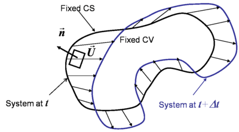

Control Volume
There are two approaches in dealing with fluid mechanics problems:
1. Control Mass or System approach
- In this approach, we focus on a fixed mass of fluid particles.
- This approach is practically hard to apply and use.
2. Control Volume approach
- In this approach, we focus on a region of space enclosed by a
Control Surface (CS).
- Conservation equations are written with respect to the volume
enclosed in the Control Surface.
Reynold's Transport Theorem
- Let B be any extensive property associated with the system.
- Reynold's transport theorem states that the net rate of change of B for the system is equal to the sum of time rate of change of B within the control volume and the rate of flux of B through the control surface.
- B could be either mass or momentum or energy or concentration of a species dispersed in the fluid.
- B=mass and B=momentum are commonly used.
-
